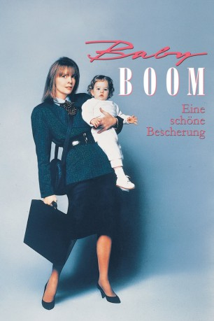

#11568 Baby Boom - Eine schöne Bescherung
Alternativ: Baby Boom (Englischer Titel)
 
 IMDB-Wertung: 6.2 / 10
IMDB-Wertung: 6.2 / 10  Tomatometer: 73
Tomatometer: 73  Metascore: 53
Metascore: 53 
J. C. Wiatt, genannt die „Tiger Lady“, ist eine typische Großstadt-Karriere-Frau mit 16-Stunden-Tag und Yuppie-Freund. Ein 13 Monate altes Baby, dessen Vormundschaft sie erbt, macht sie plötzlich zur Mutter und stellt damit ihr Leben völlig auf den Kopf. Nach anfänglicher Abneigung gegenüber dem lästigen Bündel siegen schließlich die Mutterinstinkte. Sie zieht sich von Beruf, Yuppie-Partner und der Stadtwohnung zurück und kauft sich ein Häuschen auf dem Lande. Der anfängliche Frust endet schnell, als sie eine gut funktionierende Gourmet-Apfelmus-Produktion beginnt und Freundschaft mit dem Tierarzt Jeff schließt. Plötzlich vor die Wahl zwischen privatem Glück und der Rückkehr zum Yuppie-Alltag gestellt, entscheidet sie sich für das Landleben. Was sie zunächst als Katastrophe ansieht, wird bald zum Besten, was ihr passieren konnte.
Jahr: 1987
Dauer: 110 Minuten
FSK: 6
Land: USA Studio: United ArtistsTonspuren:
Untertitel:
Auflösung: 1080p (1920x1040) Größe: 10076 MB
Genre: Drama, Komödie, Liebe
Regisseur: Charles Shyer
Drehbuch: Nancy Meyers, Charles Shyer
Soundtrack: Bill Conti
Darsteller:
 Diane Keaton als J.C. Wiatt
Diane Keaton als J.C. Wiatt Sam Shepard als Dr. Jeff Cooper
Sam Shepard als Dr. Jeff Cooper Harold Ramis als Steven Buchner
Harold Ramis als Steven Buchner Sam Wanamaker als Fritz Curtis
Sam Wanamaker als Fritz Curtis James Spader als Ken Arrenberg
James Spader als Ken Arrenberg Pat Hingle als Hughes Larrabee
Pat Hingle als Hughes Larrabee- Britt Leach als Verne Boone
- Linda Ellerbee als Narrator
 Mary Gross als Charlotte Elkman
Mary Gross als Charlotte Elkman- Patricia Estrin als Secretary
- Peter Elbling als Maitre D'
 Shera Danese als Cloak Room Attendant
Shera Danese als Cloak Room Attendant- Beverly Todd als Ann Bowen
 Angel David als Stockboy
Angel David als Stockboy- William Frankfather als Merle White
 Annie O'Donnell als Wilma White
Annie O'Donnell als Wilma White- George Petrie als Everett Sloane
 Annie Golden als Nanny
Annie Golden als Nanny- Victoria Jackson als Eve
- Eugenie Ross-Leming als Park Mom
- Jane Elliot als Park Mom
 Ben Diskin als Ben
Ben Diskin als Ben- Paxton Whitehead als 'Center' Instructor
- Constance Forslund als Receptionist
- Hansford Rowe als Sam Potts
 Billy Beck als Roofer
Billy Beck als Roofer Katherine Borowitz als Yuppie Wife
Katherine Borowitz als Yuppie Wife Robin Bartlett als Yuppie Wife
Robin Bartlett als Yuppie Wife Chris Noth als Yuppie Husband
Chris Noth als Yuppie Husband- Barry Heins als Yuppie Husband
- Cathy Cahn als Mom in the Better Baby School (uncredited)
- Selga Sanders als Mom (uncredited)
 Margaret Whitton als Executive in Conference Room (uncredited)
Margaret Whitton als Executive in Conference Room (uncredited)- Kristina Kennedy als Elizabeth Wiatt
- Michelle Kennedy als Elizabeth Wiatt
- Kim Sebastian als Robin
- Elizabeth Bennett als Mrs. Atwood
- Nicholas Cascone als Delivery Boy
- Patti Johns als Nanny
- Jennifer Balgobin als Nanny
- Marianne Doherty als Food Chain Secretary
- John C. Cooke als Dwayne
- Carol Gillies als Helga Von Haupt
- Dori Brenner als Park Mom
- John J. Philbin als Oldtimer
- Richard Humphreys als Oldtimer
- Margaret Hussey als Realtor
- Mary O'Sullivan als Katie Potts
- Lisa Fuller als Stacy
- Kate O'Connell als Store Owner
Datei: X:\1987\Baby Boom - Eine schöne Bescherung (1987, FSK6, 1920x1040).mkv seit 30.07.2019
Festplatte: Gemischt-01+Anime
 Es gibt insgesamt 50 Filme in der Gruppe '1987'
Es gibt insgesamt 50 Filme in der Gruppe '1987'